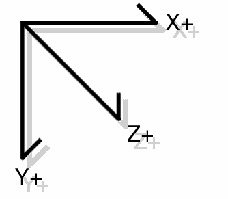

HID 设备简介
Jks Liu
Created: 2021-12-06 Mon 22:47
Table of Contents
1 参考文献
- Device Class Definition for HID 1.11 1.11
- HID Usage Tables 1.22
2 简介
- HID（Human interface device）原先用于 USB 系统。
- 现在，HID 可以支持蓝牙、I2C、SPI等等，不再局限于 USB。
3 Usage 类型
Usages 描述了三种基本类型的信息 控制 controls, 数据 data 和 集合 collections.
3.1 控制 Controls
3.1.1 线性控制，Linear Control (LC)
例
- 加减按钮
- 旋钮
- 滑块
3.1.2 开关控制，On/Off Control (OOC)
例
- 两个按钮，一个开、一个关
- 一个单独的按钮，按一下切换开关状态
- 一个有两种状态的开关
3.1.3 瞬时控制，Momentary Control (MC)
- 一个基本的按钮
3.1.4 One Shot Control (OSC)
3.1.5 Re-Trigger Control (RTC)
3.2 数据 Data
3.2.1 选择器，Selector (Sel)
- 单选，One selection of a set
- N 选，/N/ selections of a set
- 任意多选，Any selection of a set
3.2.2 Static Value (SV)
声明固定的特性。
Constant and read-only.
3.2.3 Static Flag (SF)
声明某个特定特性的存在。
3.2.4 Dynamic Flag (DF)
- 声明某个主机可控的特性存在。
3.2.5 Dynamic Value (DV)
- 一个绑定 control 的 n-bit 区域
3.3 集合 Collection
3.3.1 命名数组，Named Array (NAry)
Simplify for an application the process if finding a set of selectors, whether defined as an Array Field or a bitmap.
3.3.2 应用集合，Collection Application (CA)
标识仅在应用程序级集合中使用的 usage。
标识复杂设备的一个 HID 设备或功能子集。
操作系统使用与此集合关联的 usage 将设备链接到其控制应用程序或驱动程序。
比如：鼠标、键盘
3.3.3 其它
- Collection Logical (CL)
- Collection Physical (CP)
- Usage Switch (US)
- Usage Modifier (UM)
4 报告描述符，Report Descriptor
Report 描述符由信息片段组成. 每片信息叫做一个 Item.
4.1 Item 格式

Figure 1: 短 items

Figure 2: 长 items
4.2 Item Parser
解析器在遍历描述符时收集每个已知 item 的状态，并将它们存储在 item 状态表中。
4.2.1 流程

4.2.2 Main, Push, and Pop items
所有的 Local items 被从 item 状态表中删除, 但是 Global items 被保留.
4.3 Usage
Usage (32 bits) = Usage Page (16 bits) + Usage ID (16 bits)
4.4 报告，Report
- 输入，Input
- 输出，Output
- 特性，Feature
4.4.1 Report ID
一个 Report ID item 标记为每个 report 传输分配一个1字节的标识前缀。
4.5 多字节数值格式

4.6 方向
HID 类型的设备被 鼓励 尽可能地使用右手坐标系。

4.7 Null Values
HID类设备支持在运行时忽略报表中选定字段的能力。
如。
如果声明了一个8位的字段，并且有效值的范围是0到0x7F，那么在0x80到0xFF之间的任何值都将被认为超出范围，并在接收时被忽略。
4.8 Report Descriptors
- Report 描述符由提供设备信息的 items 组成。
- 项目的第一部分包含三个字段: item 类型*、 *item 标签（tags） 和 *item大小*。
- 这些字段一起标识项目提供的 信息 的类型。
4.8.1 Item 类型
- Main
- Global
- Local
4.8.2 Main Item tags
- Input
- Output
- Feature
- Collection
- End Collection
4.8.3 Input item tag
指来自设备上一个或多个类似控件的数据。例如，可变数据，如读取单个轴的位置或一组杠杆或数组数据，如一个或多个按钮或开关。
4.8.4 Output item tag
指设备上一个或多个类似控件的数据，如设置单个轴或一组杠杆的位置(可变数据)。或者，它可以将数据表示为一个或多个 LED (数组数据)。
4.8.5 Feature item tag
描述终端用户不打算使用的设备输入和输出—例如，软件特性或控制面板切换。
4.8.6 Collection item tag
输入、输出和特性项的有意义分组。例如鼠标、键盘、操纵杆和指针。
4.8.7 End Collection item tag
一种终止项，用于指定项集合的结束。
4.8.8 例
Report Size (3)
Report Count (2)
Input
Report Size (8)
Input
Output

Figure 6: LSB is on the left
4.8.9 必选 items
- Input (Output or Feature)
- Usage
- Usage Page
- Logical Minimum
- Logical Maximum
- Report Size
- Report Count
4.8.10 例：三键鼠标
Usage Page (Generic Desktop), ;Use the Generic Desktop Usage Page
Usage (Mouse),
Collection (Application), ;Start Mouse collection
Usage (Pointer),
Collection (Physical), ;Start Pointer collection
Usage Page (Buttons)
Usage Minimum (1),
Usage Maximum (3),
Logical Minimum (0),
Logical Maximum (1), ;Fields return values from 0 to 1
Report Count (3),
Report Size (1), ;Create three 1 bit fields (button 1, 2, & 3)
Input (Data, Variable, Absolute), ;Add fields to the input report.
Report Count (1),
Report Size (5), ;Create 5 bit constant field
Input (Constant), ;Add field to the input report
Usage Page (Generic Desktop),
Usage (X),
Usage (Y),
Logical Minimum (-127),
Logical Maximum (127), ;Fields return values from -127 to 127
Report Size (8),
Report Count (2), ;Create two 8 bit fields (X & Y position)
Input (Data, Variable, Relative), ;Add fields to the input report
End Collection, ;Close Pointer collection
End Collection ;Close Mouse collection
4.9 Main item 语义
仅短 items
4.9.1 bSize
0 = 0 字节
1 = 1 字节
2 = 2 字节
3 = 4 字节
4.9.2 bType
0 = Main
1 = Global
2 = Local
3 = Reserved
4.9.3 bTag
指定 item 功能地数值表达式
4.9.4 [data]
可选数据
4.9.5 Input tag

4.9.6 Output tag

4.9.7 Feature tag